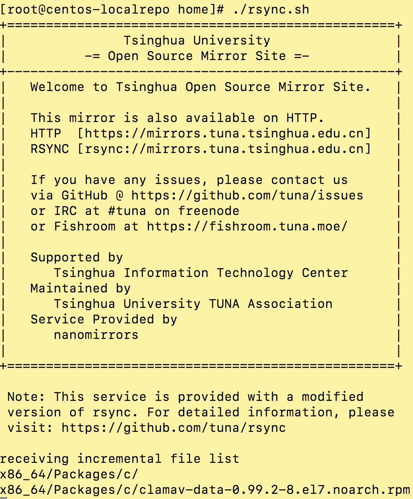

安装环境
操作系统：CentOS 7.2.1511
安装路径：/home/localrepo （保证有150G的剩余空间即可）
计划提供CentOS 7镜像同步功能
安装软件
nginx
1 | rpm -Uvh http://nginx.org/packages/centos/7/noarch/RPMS/nginx-release-centos-7-0.el7.ngx.noarch.rpm |
修改配置文件1
vi /etc/nginx/conf.d/default.conf
注释server_name
增加1
2
3
4
5
6
7location / {
root /home/localrepo;
index index.html index.htm;
autoindex on;
autoindex_exact_size off;
autoindex_localtime on;
}
配置完成后启动nginx1
nginx
重新读取配置文件1
nginx -s reload
关闭防火墙1
2systemctl disable firewalld
systemctl stop firewalld
安装createrepo
1 | yum install -y createrepo |
编写同步脚本
编写rsync.sh
1 | vi /home/rsync.sh |
创建例外清单
这些不会被同步下载
1 | vi /home/exclude.list |
开始执行同步到本地
/home/rsync.sh

配置定时同步
crontab
每天凌晨2点运行一次rsync.sh
1 | vi /homr/rsync.cron |
客户端配置
备份以前的repo文件
1 | cp -r /etc/yum.repos.d/ /root/ |
新建repo文件
1 | vi /etc/yum.repos.d/home.repo |
清除缓存
1 | yum clean all |
重建缓存
1 | yum makecache |
查询验证
1 | yum info git |
如果看到源显示为centos7-updates说明架设成功了
获取7.2.1511光盘
因为网络上没有7.2.1511的公开源，因此就下载了CentOS-7-x86_64-Everything-1511.iso
并拷贝到本地，再提供yum源
1 | cp CentOS-7-x86_64-Everything-1511.iso /home/localrepo/centos/ |